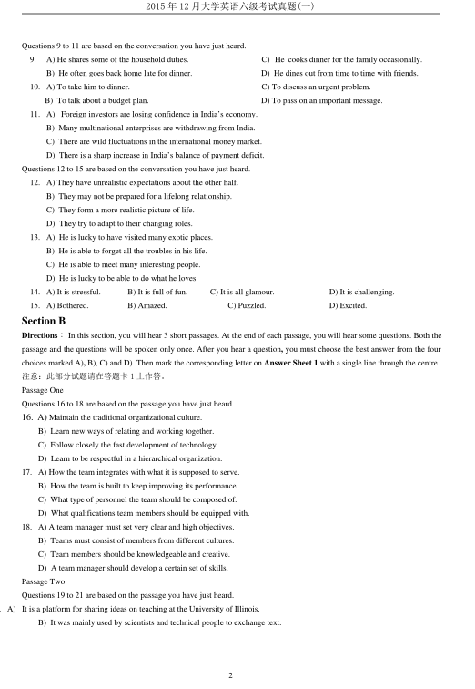
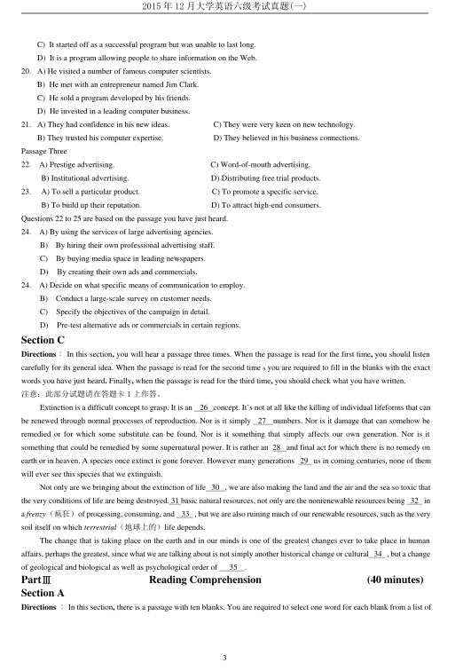
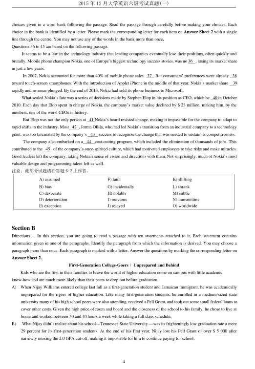
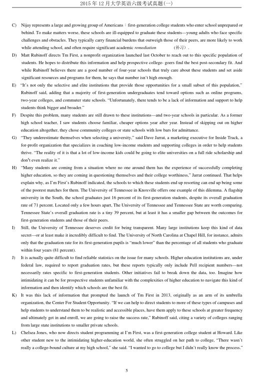
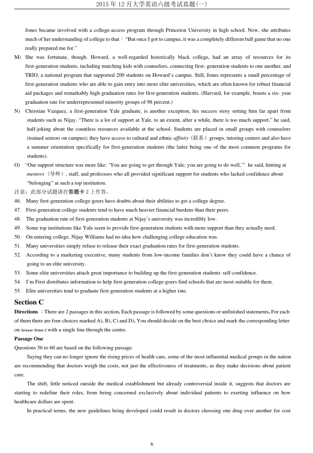
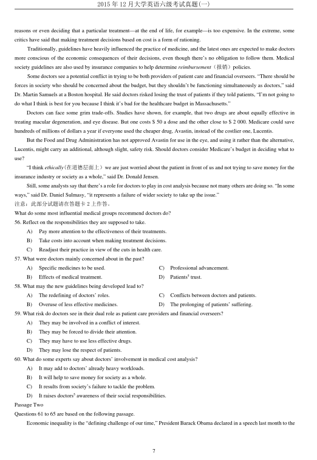
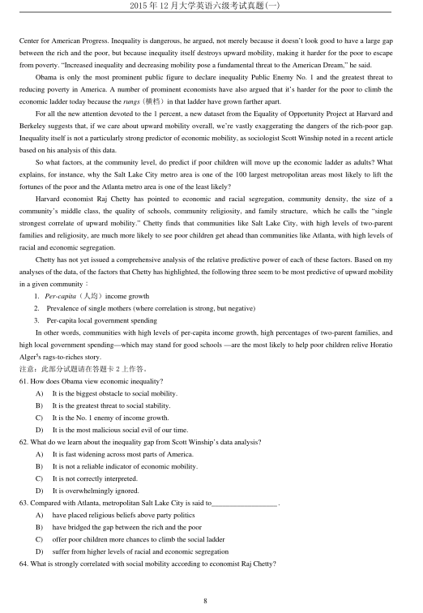

第 1 / 9 页

2015 年12 月大学英语六级考试真题(一)
2015 年12 月大学英语六级考试真题(一)
Part I
Writing
(30 minutes)
Directions：For this part, you are allowed 30 minutes to write a short essay based on the picture below. You
should focus on the impact of social networking websites on reading. You are required to write at least 150
words but no more than 200 words.
My favorite book is Facebook *.”
Facebook is the name of a social networking website.
注意：此部分试题请在答题卡1 上作答。
Part Ⅱ
Listening Comprehension
(30 minutes)
Section A
Directions：In this section, you will hear 8 short conversations and 2 long conversations. At the end of each conversation, one
or more questions will be asked about what was said. Both the conversation and the questions will be spoken only once. After
each question there will be a pause. During the pause, you must read the four choices marked A) , B), C) and D), and decide
which is the best answer. Then mark the corresponding letter on Answer Sheet 1 with a single line through the centre.
注意：此部分试题请在答题卡1 上作答。
1. A)
The restaurant offers some specials each day.
B) The restaurant is known for its food varieties.
C) The dressing makes the mixed salad very inviting.
D) The woman should mix the ingredients thoroughly.
2. A) He took over the firm from Mary.
C) He failed to foresee major problems.
B) He is running a successful business.
D) He is opening a new consulting firm.
3. A) Someone should be put in charge of office supplies.
B) The man can leave the discs in the office cabinet.
C) The man may find the supplies in the cabinet.
D) The printer in the office has run out of paper.
4. A) He has to use a magnifying glass to see clearly.
C) He has the dictionary the woman wants.
B) The woman can use his glasses to read.
D) The dictionary is not of much help to him.
5. A) Redecorating her office.
C) Seeking professional advice.
B) Majoring in interior design.
D) Adding some office furniture.
6. A) Problems in port management.
C) Delayed shipment of goods.
B) Improvement of port facilities.
D) Shortage of container ships.
7. A) Their boss.
C) Their workload.
B) A colleague.
D) A coffee machine.
8. A) Call the hotel manager for help.
C) Hold the banquet at a different place.
B) Postpone the event until a later date.
D) Get an expert to correct the error.
查看 / 复制本页文字
2015 年12 月大学英语六级考试真题(一) 2015 年12 月大学英语六级考试真题(一) Part I Writing (30 minutes) Directions：For this part, you are allowed 30 minutes to write a short essay based on the picture below. You should focus on the impact of social networking websites on reading. You are required to write at least 150 words but no more than 200 words. My favorite book is Facebook *.” Facebook is the name of a social networking website. 注意：此部分试题请在答题卡1 上作答。 Part Ⅱ Listening Comprehension (30 minutes) Section A Directions：In this section, you will hear 8 short conversations and 2 long conversations. At the end of each conversation, one or more questions will be asked about what was said. Both the conversation and the questions will be spoken only once. After each question there will be a pause. During the pause, you must read the four choices marked A) , B), C) and D), and decide which is the best answer. Then mark the corresponding letter on Answer Sheet 1 with a single line through the centre. 注意：此部分试题请在答题卡1 上作答。 1. A) The restaurant offers some specials each day. B) The restaurant is known for its food varieties. C) The dressing makes the mixed salad very inviting. D) The woman should mix the ingredients thoroughly. 2. A) He took over the firm from Mary. C) He failed to foresee major problems. B) He is running a successful business. D) He is opening a new consulting firm. 3. A) Someone should be put in charge of office supplies. B) The man can leave the discs in the office cabinet. C) The man may find the supplies in the cabinet. D) The printer in the office has run out of paper. 4. A) He has to use a magnifying glass to see clearly. C) He has the dictionary the woman wants. B) The woman can use his glasses to read. D) The dictionary is not of much help to him. 5. A) Redecorating her office. C) Seeking professional advice. B) Majoring in interior design. D) Adding some office furniture. 6. A) Problems in port management. C) Delayed shipment of goods. B) Improvement of port facilities. D) Shortage of container ships. 7. A) Their boss. C) Their workload. B) A colleague. D) A coffee machine. 8. A) Call the hotel manager for help. C) Hold the banquet at a different place. B) Postpone the event until a later date. D) Get an expert to correct the error.
第 2 / 9 页

2015 年12 月大学英语六级考试真题(一)
2
Questions 9 to 11 are based on the conversation you have just heard.
9.
A) He shares some of the household duties.
C) He cooks dinner for the family occasionally.
B) He often goes back home late for dinner.
D) He dines out from time to time with friends.
10. A) To take him to dinner.
C) To discuss an urgent problem.
B) To talk about a budget plan.
D) To pass on an important message.
11. A) Foreign investors are losing confidence in India’s economy.
B) Many multinational enterprises are withdrawing from India.
C) There are wild fluctuations in the international money market.
D) There is a sharp increase in India’s balance of payment deficit.
Questions 12 to 15 are based on the conversation you have just heard.
12. A) They have unrealistic expectations about the other half.
B) They may not be prepared for a lifelong relationship.
C) They form a more realistic picture of life.
D) They try to adapt to their changing roles.
13. A) He is lucky to have visited many exotic places.
B) He is able to forget all the troubles in his life.
C) He is able to meet many interesting people.
D) He is lucky to be able to do what he loves.
14. A) It is stressful.
B) It is full of fun.
C) It is all glamour.
D) It is challenging.
15. A) Bothered.
B) Amazed.
C) Puzzled.
D) Excited.
Section B
Directions：In this section, you will hear 3 short passages. At the end of each passage, you will hear some questions. Both the
passage and the questions will be spoken only once. After you hear a question, you must choose the best answer from the four
choices marked A), B), C) and D). Then mark the corresponding letter on Answer Sheet 1 with a single line through the centre.
注意：此部分试题请在答题卡1 上作答。
Passage One
Questions 16 to 18 are based on the passage you have just heard.
16. A) Maintain the traditional organizational culture.
B) Learn new ways of relating and working together.
C) Follow closely the fast development of technology.
D) Learn to be respectful in a hierarchical organization.
17. A) How the team integrates with what it is supposed to serve.
B) How the team is built to keep improving its performance.
C) What type of personnel the team should be composed of.
D) What qualifications team members should be equipped with.
18. A) A team manager must set very clear and high objectives.
B) Teams must consist of members from different cultures.
C) Team members should be knowledgeable and creative.
D) A team manager should develop a certain set of skills.
Passage Two
Questions 19 to 21 are based on the passage you have just heard.
. A) It is a platform for sharing ideas on teaching at the University of Illinois.
B) It was mainly used by scientists and technical people to exchange text.
查看 / 复制本页文字
2015 年12 月大学英语六级考试真题(一) 2 Questions 9 to 11 are based on the conversation you have just heard. 9. A) He shares some of the household duties. C) He cooks dinner for the family occasionally. B) He often goes back home late for dinner. D) He dines out from time to time with friends. 10. A) To take him to dinner. C) To discuss an urgent problem. B) To talk about a budget plan. D) To pass on an important message. 11. A) Foreign investors are losing confidence in India’s economy. B) Many multinational enterprises are withdrawing from India. C) There are wild fluctuations in the international money market. D) There is a sharp increase in India’s balance of payment deficit. Questions 12 to 15 are based on the conversation you have just heard. 12. A) They have unrealistic expectations about the other half. B) They may not be prepared for a lifelong relationship. C) They form a more realistic picture of life. D) They try to adapt to their changing roles. 13. A) He is lucky to have visited many exotic places. B) He is able to forget all the troubles in his life. C) He is able to meet many interesting people. D) He is lucky to be able to do what he loves. 14. A) It is stressful. B) It is full of fun. C) It is all glamour. D) It is challenging. 15. A) Bothered. B) Amazed. C) Puzzled. D) Excited. Section B Directions：In this section, you will hear 3 short passages. At the end of each passage, you will hear some questions. Both the passage and the questions will be spoken only once. After you hear a question, you must choose the best answer from the four choices marked A), B), C) and D). Then mark the corresponding letter on Answer Sheet 1 with a single line through the centre. 注意：此部分试题请在答题卡1 上作答。 Passage One Questions 16 to 18 are based on the passage you have just heard. 16. A) Maintain the traditional organizational culture. B) Learn new ways of relating and working together. C) Follow closely the fast development of technology. D) Learn to be respectful in a hierarchical organization. 17. A) How the team integrates with what it is supposed to serve. B) How the team is built to keep improving its performance. C) What type of personnel the team should be composed of. D) What qualifications team members should be equipped with. 18. A) A team manager must set very clear and high objectives. B) Teams must consist of members from different cultures. C) Team members should be knowledgeable and creative. D) A team manager should develop a certain set of skills. Passage Two Questions 19 to 21 are based on the passage you have just heard. . A) It is a platform for sharing ideas on teaching at the University of Illinois. B) It was mainly used by scientists and technical people to exchange text.
第 3 / 9 页

2015 年12 月大学英语六级考试真题(一)
3
C) It started off as a successful program but was unable to last long.
D) It is a program allowing people to share information on the Web.
20. A) He visited a number of famous computer scientists.
B) He met with an entrepreneur named Jim Clark.
C) He sold a program developed by his friends.
D) He invested in a leading computer business.
21. A) They had confidence in his new ideas.
C) They were very keen on new technology.
B) They trusted his computer expertise.
D) They believed in his business connections.
Passage Three
22.
A) Prestige advertising.
C) Word-of-mouth advertising.
B) Institutional advertising.
D) Distributing free trial products.
23.
A) To sell a particular product.
C) To promote a specific service.
B) To build up their reputation.
D) To attract high-end consumers.
Questions 22 to 25 are based on the passage you have just heard.
24.
A) By using the services of large advertising agencies.
B)
By hiring their own professional advertising staff.
C)
By buying media space in leading newspapers.
D)
By creating their own ads and commercials.
24.
A) Decide on what specific means of communication to employ.
B)
Conduct a large-scale survey on customer needs.
C)
Specify the objectives of the campaign in detail.
D)
Pre-test alternative ads or commercials in certain regions.
Section C
Directions：In this section, you will hear a passage three times. When the passage is read for the first time, you should listen
carefully for its general idea. When the passage is read for the second time 9 you are required to fill in the blanks with the exact
words you have just heard. Finally, when the passage is read for the third time, you should check what you have written.
注意：此部分试题请在答题卡1 上作答。
Extinction is a difficult concept to grasp. It is an
26 concept. It’s not at all like the killing of individual lifeforms that can
be renewed through normal processes of reproduction. Nor is it simply
27
numbers. Nor is it damage that can somehow be
remedied or for which some substitute can be found. Nor is it something that simply affects our own generation. Nor is it
something that could be remedied by some supernatural power. It is rather an 28 and final act for which there is no remedy on
earth or in heaven. A species once extinct is gone forever. However many generations 29 us in coming centuries, none of them
will ever see this species that we extinguish.
Not only are we bringing about the extinction of life 30 , we are also making the land and the air and the sea so toxic that
the very conditions of life are being destroyed. 31 basic natural resources, not only are the nonrenewable resources being 32 in
a frenzy（疯狂）of processing, consuming, and
33 , but we are also ruining much of our renewable resources, such as the very
soil itself on which terrestrial（地球上的）life depends.
The change that is taking place on the earth and in our minds is one of the greatest changes ever to take place in human
affairs, perhaps the greatest, since what we are talking about is not simply another historical change or cultural 34 , but a change
of geological and biological as well as psychological order of
35
.
PartⅢ
Reading Comprehension
(40 minutes)
Section A
Directions ：In this section, there is a passage with ten blanks. You are required to select one word for each blank from a list of
查看 / 复制本页文字
2015 年12 月大学英语六级考试真题(一) 3 C) It started off as a successful program but was unable to last long. D) It is a program allowing people to share information on the Web. 20. A) He visited a number of famous computer scientists. B) He met with an entrepreneur named Jim Clark. C) He sold a program developed by his friends. D) He invested in a leading computer business. 21. A) They had confidence in his new ideas. C) They were very keen on new technology. B) They trusted his computer expertise. D) They believed in his business connections. Passage Three 22. A) Prestige advertising. C) Word-of-mouth advertising. B) Institutional advertising. D) Distributing free trial products. 23. A) To sell a particular product. C) To promote a specific service. B) To build up their reputation. D) To attract high-end consumers. Questions 22 to 25 are based on the passage you have just heard. 24. A) By using the services of large advertising agencies. B) By hiring their own professional advertising staff. C) By buying media space in leading newspapers. D) By creating their own ads and commercials. 24. A) Decide on what specific means of communication to employ. B) Conduct a large-scale survey on customer needs. C) Specify the objectives of the campaign in detail. D) Pre-test alternative ads or commercials in certain regions. Section C Directions：In this section, you will hear a passage three times. When the passage is read for the first time, you should listen carefully for its general idea. When the passage is read for the second time 9 you are required to fill in the blanks with the exact words you have just heard. Finally, when the passage is read for the third time, you should check what you have written. 注意：此部分试题请在答题卡1 上作答。 Extinction is a difficult concept to grasp. It is an 26 concept. It’s not at all like the killing of individual lifeforms that can be renewed through normal processes of reproduction. Nor is it simply 27 numbers. Nor is it damage that can somehow be remedied or for which some substitute can be found. Nor is it something that simply affects our own generation. Nor is it something that could be remedied by some supernatural power. It is rather an 28 and final act for which there is no remedy on earth or in heaven. A species once extinct is gone forever. However many generations 29 us in coming centuries, none of them will ever see this species that we extinguish. Not only are we bringing about the extinction of life 30 , we are also making the land and the air and the sea so toxic that the very conditions of life are being destroyed. 31 basic natural resources, not only are the nonrenewable resources being 32 in a frenzy（疯狂）of processing, consuming, and 33 , but we are also ruining much of our renewable resources, such as the very soil itself on which terrestrial（地球上的）life depends. The change that is taking place on the earth and in our minds is one of the greatest changes ever to take place in human affairs, perhaps the greatest, since what we are talking about is not simply another historical change or cultural 34 , but a change of geological and biological as well as psychological order of 35 . PartⅢ Reading Comprehension (40 minutes) Section A Directions ：In this section, there is a passage with ten blanks. You are required to select one word for each blank from a list of
第 4 / 9 页

2015 年12 月大学英语六级考试真题(一)
4
choices given in a word bank following the passage. Read the passage through carefully before making your choices. Each
choice in the bank is identified by a letter. Please mark the corresponding letter for each item on Answer Sheet 2 with a single
line through the centre. You may not use any of the words in the bank more than once.
Questions 36 to 45 are based on the following passage.
It seems to be a law in the technology industry that leading companies eventually lose their positions, often quickly and
brutally. Mobile phone champion Nokia, one of Europe’s biggest technology success stories, was no 36 , losing its market share
in just a few years.
In 2007, Nokia accounted for more than 40% of mobile phone sales
37
But consumers’ preferences were already
38
toward touch-screen smartphones. With the introduction of Applet iPhone in the middle of that year, Nokia’s market share
39
rapidly and revenue plunged. By the end of 2013, Nokia had sold its phone business to Microsoft.
What sealed Nokia’s fate was a series of decisions made by Stephen Elop in his position as CEO, which he 40 in October
2010. Each day that Elop spent in charge of Nokia, the company’s market value declined by $ 23 million, making him, by the
numbers, one of the worst CEOs in history.
But Elop was not the only person at 41 Nokia’s board resisted change, making it impossible for the company to adapt to
rapid shifts in the industry. Most 42 , Jorma Ollila, who had led Nokia’s transition from an industrial company to a technology
giant, was too fascinated by the company’s
43
success to recognize the change that was needed to sustain its competitiveness.
The company also embarked on a
44
cost-cutting program, which included the elimination of thousands of jobs. This
contributed to the 45 of the company’s once-spirited culture, which had motivated employees to take risks and make miracles.
Good leaders left the company, taking Nokia’s sense of vision and directions with them. Not surprisingly, much of Nokia’s most
valuable design and programming talent left as well.
注意：此部分试题请在答题卡2 上作答。
Section B
Directions ：In this section, you are going to read a passage with ten statements attached to it. Each statement contains
information given in one of the paragraphs. Identify the paragraph from which the information is derived. You may choose a
paragraph more than once. Each paragraph is marked with a letter. Answer the questions by marking the corresponding letter on
Answer Sheet 2.
First-Generation College-Goers：Unprepared and Behind
Kids who are the first in their families to brave the world of higher education come on campus with little academic
know-how and are much more likely than their peers to drop out before graduation.
A)
When Nijay Williams entered college last fall as a first-generation student and Jamaican immigrant, he was academically
unprepared for the rigors of higher education. Like many first-generation students, he enrolled in a medium-sized state
university many of his high school peers were also attending, received a Pell Grant, and took out some small federal loans to
cover other costs. Given the high price of room and board and the closeness of the school to his family, he chose to live at
home and worked between 30 and 40 hours a week while taking a full class schedule.
B)
What Nijay didn’t realize about his school—Tennessee State University —was its frighteningly low graduation rate a mere
29 percent for its first-generation students. At the end of his first year, Nijay lost his Pell Grant of over $ 5 000 after
narrowly missing the 2.0 GPA cut-off, making it impossible for him to continue paying for school.
A) assumed
F) fault
K) shifting
B) bias
G) incidentally
L) shrank
C) desperate
H) notably
M) subtle
D) deterioration
I) previous
N) transmitting
E) exception
J) relayed
O) worldwide
查看 / 复制本页文字
2015 年12 月大学英语六级考试真题(一) 4 choices given in a word bank following the passage. Read the passage through carefully before making your choices. Each choice in the bank is identified by a letter. Please mark the corresponding letter for each item on Answer Sheet 2 with a single line through the centre. You may not use any of the words in the bank more than once. Questions 36 to 45 are based on the following passage. It seems to be a law in the technology industry that leading companies eventually lose their positions, often quickly and brutally. Mobile phone champion Nokia, one of Europe’s biggest technology success stories, was no 36 , losing its market share in just a few years. In 2007, Nokia accounted for more than 40% of mobile phone sales 37 But consumers’ preferences were already 38 toward touch-screen smartphones. With the introduction of Applet iPhone in the middle of that year, Nokia’s market share 39 rapidly and revenue plunged. By the end of 2013, Nokia had sold its phone business to Microsoft. What sealed Nokia’s fate was a series of decisions made by Stephen Elop in his position as CEO, which he 40 in October 2010. Each day that Elop spent in charge of Nokia, the company’s market value declined by $ 23 million, making him, by the numbers, one of the worst CEOs in history. But Elop was not the only person at 41 Nokia’s board resisted change, making it impossible for the company to adapt to rapid shifts in the industry. Most 42 , Jorma Ollila, who had led Nokia’s transition from an industrial company to a technology giant, was too fascinated by the company’s 43 success to recognize the change that was needed to sustain its competitiveness. The company also embarked on a 44 cost-cutting program, which included the elimination of thousands of jobs. This contributed to the 45 of the company’s once-spirited culture, which had motivated employees to take risks and make miracles. Good leaders left the company, taking Nokia’s sense of vision and directions with them. Not surprisingly, much of Nokia’s most valuable design and programming talent left as well. 注意：此部分试题请在答题卡2 上作答。 Section B Directions ：In this section, you are going to read a passage with ten statements attached to it. Each statement contains information given in one of the paragraphs. Identify the paragraph from which the information is derived. You may choose a paragraph more than once. Each paragraph is marked with a letter. Answer the questions by marking the corresponding letter on Answer Sheet 2. First-Generation College-Goers：Unprepared and Behind Kids who are the first in their families to brave the world of higher education come on campus with little academic know-how and are much more likely than their peers to drop out before graduation. A) When Nijay Williams entered college last fall as a first-generation student and Jamaican immigrant, he was academically unprepared for the rigors of higher education. Like many first-generation students, he enrolled in a medium-sized state university many of his high school peers were also attending, received a Pell Grant, and took out some small federal loans to cover other costs. Given the high price of room and board and the closeness of the school to his family, he chose to live at home and worked between 30 and 40 hours a week while taking a full class schedule. B) What Nijay didn’t realize about his school—Tennessee State University —was its frighteningly low graduation rate a mere 29 percent for its first-generation students. At the end of his first year, Nijay lost his Pell Grant of over $ 5 000 after narrowly missing the 2.0 GPA cut-off, making it impossible for him to continue paying for school. A) assumed F) fault K) shifting B) bias G) incidentally L) shrank C) desperate H) notably M) subtle D) deterioration I) previous N) transmitting E) exception J) relayed O) worldwide
第 5 / 9 页

2015 年12 月大学英语六级考试真题(一)
5
C)
Nijay represents a large and growing group of Americans：first-generation college students who enter school unprepared or
behind. To make matters worse, these schools are ill-equipped to graduate these students—young adults who face specific
challenges and obstacles. They typically carry financial burdens that outweigh those of their peers, are more likely to work
while attending school, and often require significant academic remediation
(补习）.
D)
Matt Rubinoff directs Tm First, a nonprofit organization launched last October to reach out to this specific population of
students. He hopes to distribute this information and help prospective college- goers find the best post-secondary fit. And
while Rubinoff believes there are a good number of four-year schools that truly care about these students and set aside
significant resources and programs for them, he says that number isn’t high enough.
E)
“It’s not only the selective and elite institutions that provide those opportunities for a small subset of this population,”
Rubinoff said, adding that a majority of first-generation undergraduates tend toward options such as online programs,
two-year colleges, and commuter state schools. “Unfortunately, there tends to be a lack of information and support to help
students think bigger and broader.”
F)
Despite this problem, many students are still drawn to these institutions—and two-year schools in particular. As a former
high school teacher, I saw students choose familiar, cheaper options year after year. Instead of skipping out on higher
education altogether, they chose community colleges or state schools with low bars for admittance.
G)
“They underestimate themselves when selecting a university,” said Dave Jarrat, a marketing executive for Inside Track, a
for-profit organization that specializes in coaching low-income students and supporting colleges in order to help students
thrive. “The reality of it is that a lot of low-income kids could be going to elite universities on a full ride scholarship and
don5t even realize it.”
H)
“Many students are coming from a situation where no one around them has the experience of successfully completing
higher education, so they are coming in questioning themselves and their college worthiness,” Jarrat continued. That helps
explain why, as I’m First’s Rubinoff indicated, the schools to which these students end up resorting can end up being some
of the poorest matches for them. The University of Tennessee in Knoxville offers one example of this dilemma. A flagship
university in the South, the school graduates just 16 percent of its first-generation students, despite its overall graduation
rate of 71 percent. Located only a few hours apart, The University of Tennessee and Tennessee State are worth comparing.
Tennessee State’s overall graduation rate is a tiny 39 percent, but at least it has a smaller gap between the outcomes for
first-generation students and those of their peers.
I)
Still, the University of Tennessee deserves credit for being transparent. Many large institutions keep this kind of data
secret—or at least make it incredibly difficult to find. The University of North Carolina at Chapel Hill, for instance, admits
only that the graduation rate for its first-generation pupils is “much lower” than the percentage of all students who graduate
within four years (81 percent).
J)
It is actually quite difficult to find reliable statistics on the issue for many schools. Higher education institutions are, under
federal law, required to report graduation rates, but these reports typically only include Pell recipient numbers—not
necessarily rates specific to first-generation students. Other initiatives fail to break down the data, too. Imagine how
intimidating it can be for prospective students unfamiliar with the complexities of higher education to navigate this kind of
information and then identify which schools are the best fit.
K)
It was this lack of information that prompted the launch of Tm First in 2013, originally as an arm of its umbrella
organization, the Center For Student Opportunity. “If we can help to direct students to more of these types of campuses and
help students to understand them to be realistic and accessible places, have them apply to these schools at greater frequency
and ultimately get in and enroll, we are going to raise the success rate,” Rubinoff said, citing a variety of colleges ranging
from large state institutions to smaller private schools.
L)
Chelsea Jones, who now directs student programming at I’m First, was a first-generation college student at Howard. Like
other student new to the intimidating higher-education world, she often struggled on her path to college, “There wasn’t
really a college-bound culture at my high school,” she said. “I wanted to go to college but I didn’t really know the process.”
查看 / 复制本页文字
2015 年12 月大学英语六级考试真题(一) 5 C) Nijay represents a large and growing group of Americans：first-generation college students who enter school unprepared or behind. To make matters worse, these schools are ill-equipped to graduate these students—young adults who face specific challenges and obstacles. They typically carry financial burdens that outweigh those of their peers, are more likely to work while attending school, and often require significant academic remediation (补习）. D) Matt Rubinoff directs Tm First, a nonprofit organization launched last October to reach out to this specific population of students. He hopes to distribute this information and help prospective college- goers find the best post-secondary fit. And while Rubinoff believes there are a good number of four-year schools that truly care about these students and set aside significant resources and programs for them, he says that number isn’t high enough. E) “It’s not only the selective and elite institutions that provide those opportunities for a small subset of this population,” Rubinoff said, adding that a majority of first-generation undergraduates tend toward options such as online programs, two-year colleges, and commuter state schools. “Unfortunately, there tends to be a lack of information and support to help students think bigger and broader.” F) Despite this problem, many students are still drawn to these institutions—and two-year schools in particular. As a former high school teacher, I saw students choose familiar, cheaper options year after year. Instead of skipping out on higher education altogether, they chose community colleges or state schools with low bars for admittance. G) “They underestimate themselves when selecting a university,” said Dave Jarrat, a marketing executive for Inside Track, a for-profit organization that specializes in coaching low-income students and supporting colleges in order to help students thrive. “The reality of it is that a lot of low-income kids could be going to elite universities on a full ride scholarship and don5t even realize it.” H) “Many students are coming from a situation where no one around them has the experience of successfully completing higher education, so they are coming in questioning themselves and their college worthiness,” Jarrat continued. That helps explain why, as I’m First’s Rubinoff indicated, the schools to which these students end up resorting can end up being some of the poorest matches for them. The University of Tennessee in Knoxville offers one example of this dilemma. A flagship university in the South, the school graduates just 16 percent of its first-generation students, despite its overall graduation rate of 71 percent. Located only a few hours apart, The University of Tennessee and Tennessee State are worth comparing. Tennessee State’s overall graduation rate is a tiny 39 percent, but at least it has a smaller gap between the outcomes for first-generation students and those of their peers. I) Still, the University of Tennessee deserves credit for being transparent. Many large institutions keep this kind of data secret—or at least make it incredibly difficult to find. The University of North Carolina at Chapel Hill, for instance, admits only that the graduation rate for its first-generation pupils is “much lower” than the percentage of all students who graduate within four years (81 percent). J) It is actually quite difficult to find reliable statistics on the issue for many schools. Higher education institutions are, under federal law, required to report graduation rates, but these reports typically only include Pell recipient numbers—not necessarily rates specific to first-generation students. Other initiatives fail to break down the data, too. Imagine how intimidating it can be for prospective students unfamiliar with the complexities of higher education to navigate this kind of information and then identify which schools are the best fit. K) It was this lack of information that prompted the launch of Tm First in 2013, originally as an arm of its umbrella organization, the Center For Student Opportunity. “If we can help to direct students to more of these types of campuses and help students to understand them to be realistic and accessible places, have them apply to these schools at greater frequency and ultimately get in and enroll, we are going to raise the success rate,” Rubinoff said, citing a variety of colleges ranging from large state institutions to smaller private schools. L) Chelsea Jones, who now directs student programming at I’m First, was a first-generation college student at Howard. Like other student new to the intimidating higher-education world, she often struggled on her path to college, “There wasn’t really a college-bound culture at my high school,” she said. “I wanted to go to college but I didn’t really know the process.”
第 6 / 9 页

2015 年12 月大学英语六级考试真题(一)
6
Jones became involved with a college-access program through Princeton University in high school. Now, she attributes
much of her understanding of college to that：“But once I got to campus, it was a completely different ball game that no one
really prepared me for.”
M) She was fortunate, though. Howard, a well-regarded historically black college, had an array of resources for its
first-generation students, including matching kids with counselors, connecting first- generation students to one another, and
TRIO, a national program that supported 200 students on Howard’s campus. Still, Jones represents a small percentage of
first-generation students who are able to gain entry into more elite universities, which are often known for robust financial
aid packages and remarkably high graduation rates for first-generation students. (Harvard, for example, boasts a six- year
graduation rate for underrepresented minority groups of 98 percent.)
N)
Christian Vazquez, a first-generation Yale graduate, is another exception, his success story setting him far apart from
students such as Nijay. “There is a lot of support at Yale, to an extent, after a while, there is too much support,” he said,
half-joking about the countless resources available at the school. Students are placed in small groups with counselors
(trained seniors on campus); they have access to cultural and ethnic affinity (联系）groups, tutoring centers and also have
a summer orientation specifically for first-generation students (the latter being one of the most common programs for
students).
O)
“Our support structure was more like: ‘You are going to get through Yale; you are going to do well,’” he said, hinting at
mentors (导师）, staff, and professors who all provided significant support for students who lacked confidence about
“belonging” at such a top institution.
注意：此部分试题请在答题卡2 上作答。
46.
Many first-generation college-goers have doubts about their abilities to get a college degree.
47.
First-generation college students tend to have much heavier financial burdens than their peers.
48.
The graduation rate of first-generation students at Nijay’s university was incredibly low.
49.
Some top institutions like Yale seem to provide first-generation students with more support than they actually need.
50.
On entering college, Nijay Williams had no idea how challenging college education was.
51.
Many universities simply refuse to release their exact graduation rates for first-generation students.
52.
According to a marketing executive, many students from low-income families don’t know they could have a chance of
going to an elite university.
53.
Some elite universities attach great importance to building up the first-generation students, self-confidence.
54.
I’m First distributes information to help first-generation college-goers find schools that are most suitable for them.
55.
Elite universities tend to graduate first-generation students at a higher rate.
Section C
Directions ：There are 2 passages in this section. Each passage is followed by some questions or unfinished statements. For each
of them there are four choices marked A), B), C) and D). You should decide on the best choice and mark the corresponding letter
on Answer Sheet 2 with a single line through the centre.
Passage One
Questions 56 to 60 are based on the following passage.
Saying they can no longer ignore the rising prices of health care, some of the most influential medical groups in the nation
are recommending that doctors weigh the costs, not just the effectiveness of treatments, as they make decisions about patient
care.
The shift, little noticed outside the medical establishment but already controversial inside it, suggests that doctors are
starting to redefine their roles, from being concerned exclusively about individual patients to exerting influence on how
healthcare dollars are spent.
In practical terms, the new guidelines being developed could result in doctors choosing one drug over another for cost
查看 / 复制本页文字
2015 年12 月大学英语六级考试真题(一) 6 Jones became involved with a college-access program through Princeton University in high school. Now, she attributes much of her understanding of college to that：“But once I got to campus, it was a completely different ball game that no one really prepared me for.” M) She was fortunate, though. Howard, a well-regarded historically black college, had an array of resources for its first-generation students, including matching kids with counselors, connecting first- generation students to one another, and TRIO, a national program that supported 200 students on Howard’s campus. Still, Jones represents a small percentage of first-generation students who are able to gain entry into more elite universities, which are often known for robust financial aid packages and remarkably high graduation rates for first-generation students. (Harvard, for example, boasts a six- year graduation rate for underrepresented minority groups of 98 percent.) N) Christian Vazquez, a first-generation Yale graduate, is another exception, his success story setting him far apart from students such as Nijay. “There is a lot of support at Yale, to an extent, after a while, there is too much support,” he said, half-joking about the countless resources available at the school. Students are placed in small groups with counselors (trained seniors on campus); they have access to cultural and ethnic affinity (联系）groups, tutoring centers and also have a summer orientation specifically for first-generation students (the latter being one of the most common programs for students). O) “Our support structure was more like: ‘You are going to get through Yale; you are going to do well,’” he said, hinting at mentors (导师）, staff, and professors who all provided significant support for students who lacked confidence about “belonging” at such a top institution. 注意：此部分试题请在答题卡2 上作答。 46. Many first-generation college-goers have doubts about their abilities to get a college degree. 47. First-generation college students tend to have much heavier financial burdens than their peers. 48. The graduation rate of first-generation students at Nijay’s university was incredibly low. 49. Some top institutions like Yale seem to provide first-generation students with more support than they actually need. 50. On entering college, Nijay Williams had no idea how challenging college education was. 51. Many universities simply refuse to release their exact graduation rates for first-generation students. 52. According to a marketing executive, many students from low-income families don’t know they could have a chance of going to an elite university. 53. Some elite universities attach great importance to building up the first-generation students, self-confidence. 54. I’m First distributes information to help first-generation college-goers find schools that are most suitable for them. 55. Elite universities tend to graduate first-generation students at a higher rate. Section C Directions ：There are 2 passages in this section. Each passage is followed by some questions or unfinished statements. For each of them there are four choices marked A), B), C) and D). You should decide on the best choice and mark the corresponding letter on Answer Sheet 2 with a single line through the centre. Passage One Questions 56 to 60 are based on the following passage. Saying they can no longer ignore the rising prices of health care, some of the most influential medical groups in the nation are recommending that doctors weigh the costs, not just the effectiveness of treatments, as they make decisions about patient care. The shift, little noticed outside the medical establishment but already controversial inside it, suggests that doctors are starting to redefine their roles, from being concerned exclusively about individual patients to exerting influence on how healthcare dollars are spent. In practical terms, the new guidelines being developed could result in doctors choosing one drug over another for cost
第 7 / 9 页

2015 年12 月大学英语六级考试真题(一)
7
reasons or even deciding that a particular treatment—at the end of life, for example—is too expensive. In the extreme, some
critics have said that making treatment decisions based on cost is a form of rationing.
Traditionally, guidelines have heavily influenced the practice of medicine, and the latest ones are expected to make doctors
more conscious of the economic consequences of their decisions, even though there’s no obligation to follow them. Medical
society guidelines are also used by insurance companies to help determine reimbursement（报销）policies.
Some doctors see a potential conflict in trying to be both providers of patient care and financial overseers. “There should be
forces in society who should be concerned about the budget, but they shouldn’t be functioning simultaneously as doctors,” said
Dr. Martin Samuels at a Boston hospital. He said doctors risked losing the trust of patients if they told patients, “I’m not going to
do what I think is best for you because I think it’s bad for the healthcare budget in Massachusetts.”
Doctors can face some grim trade-offs. Studies have shown, for example, that two drugs are about equally effective in
treating macular degeneration, and eye disease. But one costs $ 50 a dose and the other close to $ 2 000. Medicare could save
hundreds of millions of dollars a year if everyone used the cheaper drug, Avastin, instead of the costlier one, Lucentis.
But the Food and Drug Administration has not approved Avastin for use in the eye, and using it rather than the alternative,
Lucentis, might carry an additional, although slight, safety risk. Should doctors consider Medicare’s budget in deciding what to
use?
“I think ethically(在道德层面上）we are just worried about the patient in front of us and not trying to save money for the
insurance industry or society as a whole,” said Dr. Donald Jensen.
Still, some analysts say that there’s a role for doctors to play in cost analysis because not many others are doing so. “In some
ways,” said Dr. Daniel Sulmasy, “it represents a failure of wider society to take up the issue.”
注意：此部分试题请在答题卡2 上作答。
What do some most influential medical groups recommend doctors do?
56. Reflect on the responsibilities they are supposed to take.
A)
Pay more attention to the effectiveness of their treatments.
B)
Take costs into account when making treatment decisions.
C)
Readjust their practice in view of the cuts in health care.
57. What were doctors mainly concerned about in the past?
A)
Specific medicines to be used.
C)
Professional advancement.
B)
Effects of medical treatment.
D)
Patients5 trust.
58. What may the new guidelines being developed lead to?
A)
The redefining of doctors’ roles.
C)
Conflicts between doctors and patients.
B)
Overuse of less effective medicines.
D)
The prolonging of patients’ suffering.
59. What risk do doctors see in their dual role as patient care providers and financial overseers?
A)
They may be involved in a conflict of interest.
B)
They may be forced to divide their attention.
C)
They may have to use less effective drugs.
D)
They may lose the respect of patients.
60. What do some experts say about doctors’ involvement in medical cost analysis?
A)
It may add to doctors’ already heavy workloads.
B)
It will help to save money for society as a whole.
C)
It results from society’s failure to tackle the problem.
D)
It raises doctors5 awareness of their social responsibilities.
Passage Two
Questions 61 to 65 are based on the following passage.
Economic inequality is the “defining challenge of our time,” President Barack Obama declared in a speech last month to the
查看 / 复制本页文字
2015 年12 月大学英语六级考试真题(一) 7 reasons or even deciding that a particular treatment—at the end of life, for example—is too expensive. In the extreme, some critics have said that making treatment decisions based on cost is a form of rationing. Traditionally, guidelines have heavily influenced the practice of medicine, and the latest ones are expected to make doctors more conscious of the economic consequences of their decisions, even though there’s no obligation to follow them. Medical society guidelines are also used by insurance companies to help determine reimbursement（报销）policies. Some doctors see a potential conflict in trying to be both providers of patient care and financial overseers. “There should be forces in society who should be concerned about the budget, but they shouldn’t be functioning simultaneously as doctors,” said Dr. Martin Samuels at a Boston hospital. He said doctors risked losing the trust of patients if they told patients, “I’m not going to do what I think is best for you because I think it’s bad for the healthcare budget in Massachusetts.” Doctors can face some grim trade-offs. Studies have shown, for example, that two drugs are about equally effective in treating macular degeneration, and eye disease. But one costs $ 50 a dose and the other close to $ 2 000. Medicare could save hundreds of millions of dollars a year if everyone used the cheaper drug, Avastin, instead of the costlier one, Lucentis. But the Food and Drug Administration has not approved Avastin for use in the eye, and using it rather than the alternative, Lucentis, might carry an additional, although slight, safety risk. Should doctors consider Medicare’s budget in deciding what to use? “I think ethically(在道德层面上）we are just worried about the patient in front of us and not trying to save money for the insurance industry or society as a whole,” said Dr. Donald Jensen. Still, some analysts say that there’s a role for doctors to play in cost analysis because not many others are doing so. “In some ways,” said Dr. Daniel Sulmasy, “it represents a failure of wider society to take up the issue.” 注意：此部分试题请在答题卡2 上作答。 What do some most influential medical groups recommend doctors do? 56. Reflect on the responsibilities they are supposed to take. A) Pay more attention to the effectiveness of their treatments. B) Take costs into account when making treatment decisions. C) Readjust their practice in view of the cuts in health care. 57. What were doctors mainly concerned about in the past? A) Specific medicines to be used. C) Professional advancement. B) Effects of medical treatment. D) Patients5 trust. 58. What may the new guidelines being developed lead to? A) The redefining of doctors’ roles. C) Conflicts between doctors and patients. B) Overuse of less effective medicines. D) The prolonging of patients’ suffering. 59. What risk do doctors see in their dual role as patient care providers and financial overseers? A) They may be involved in a conflict of interest. B) They may be forced to divide their attention. C) They may have to use less effective drugs. D) They may lose the respect of patients. 60. What do some experts say about doctors’ involvement in medical cost analysis? A) It may add to doctors’ already heavy workloads. B) It will help to save money for society as a whole. C) It results from society’s failure to tackle the problem. D) It raises doctors5 awareness of their social responsibilities. Passage Two Questions 61 to 65 are based on the following passage. Economic inequality is the “defining challenge of our time,” President Barack Obama declared in a speech last month to the
第 8 / 9 页

2015 年12 月大学英语六级考试真题(一)
8
Center for American Progress. Inequality is dangerous, he argued, not merely because it doesn’t look good to have a large gap
between the rich and the poor, but because inequality itself destroys upward mobility, making it harder for the poor to escape
from poverty. “Increased inequality and decreasing mobility pose a fundamental threat to the American Dream,” he said.
Obama is only the most prominent public figure to declare inequality Public Enemy No. 1 and the greatest threat to
reducing poverty in America. A number of prominent economists have also argued that it’s harder for the poor to climb the
economic ladder today because the rungs (横档）in that ladder have grown farther apart.
For all the new attention devoted to the 1 percent, a new dataset from the Equality of Opportunity Project at Harvard and
Berkeley suggests that, if we care about upward mobility overall, we’re vastly exaggerating the dangers of the rich-poor gap.
Inequality itself is not a particularly strong predictor of economic mobility, as sociologist Scott Winship noted in a recent article
based on his analysis of this data.
So what factors, at the community level, do predict if poor children will move up the economic ladder as adults? What
explains, for instance, why the Salt Lake City metro area is one of the 100 largest metropolitan areas most likely to lift the
fortunes of the poor and the Atlanta metro area is one of the least likely?
Harvard economist Raj Chetty has pointed to economic and racial segregation, community density, the size of a
community’s middle class, the quality of schools, community religiosity, and family structure, which he calls the “single
strongest correlate of upward mobility.” Chetty finds that communities like Salt Lake City, with high levels of two-parent
families and religiosity, are much more likely to see poor children get ahead than communities like Atlanta, with high levels of
racial and economic segregation.
Chetty has not yet issued a comprehensive analysis of the relative predictive power of each of these factors. Based on my
analyses of the data, of the factors that Chetty has highlighted, the following three seem to be most predictive of upward mobility
in a given community：
1. Per-capita（人均）income growth
2.
Prevalence of single mothers (where correlation is strong, but negative)
3.
Per-capita local government spending
In other words, communities with high levels of per-capita income growth, high percentages of two-parent families, and
high local government spending—which may stand for good schools —are the most likely to help poor children relive Horatio
Alger5s rags-to-riches story.
注意：此部分试题请在答题卡2 上作答。
61. How does Obama view economic inequality?
A)
It is the biggest obstacle to social mobility.
B)
It is the greatest threat to social stability.
C)
It is the No. 1 enemy of income growth.
D)
It is the most malicious social evil of our time.
62. What do we learn about the inequality gap from Scott Winship’s data analysis?
A)
It is fast widening across most parts of America.
B)
It is not a reliable indicator of economic mobility.
C)
It is not correctly interpreted.
D)
It is overwhelmingly ignored.
63. Compared with Atlanta, metropolitan Salt Lake City is said to__________________.
A)
have placed religious beliefs above party politics
B)
have bridged the gap between the rich and the poor
C)
offer poor children more chances to climb the social ladder
D)
suffer from higher levels of racial and economic segregation
64. What is strongly correlated with social mobility according to economist Raj Chetty?
查看 / 复制本页文字
2015 年12 月大学英语六级考试真题(一) 8 Center for American Progress. Inequality is dangerous, he argued, not merely because it doesn’t look good to have a large gap between the rich and the poor, but because inequality itself destroys upward mobility, making it harder for the poor to escape from poverty. “Increased inequality and decreasing mobility pose a fundamental threat to the American Dream,” he said. Obama is only the most prominent public figure to declare inequality Public Enemy No. 1 and the greatest threat to reducing poverty in America. A number of prominent economists have also argued that it’s harder for the poor to climb the economic ladder today because the rungs (横档）in that ladder have grown farther apart. For all the new attention devoted to the 1 percent, a new dataset from the Equality of Opportunity Project at Harvard and Berkeley suggests that, if we care about upward mobility overall, we’re vastly exaggerating the dangers of the rich-poor gap. Inequality itself is not a particularly strong predictor of economic mobility, as sociologist Scott Winship noted in a recent article based on his analysis of this data. So what factors, at the community level, do predict if poor children will move up the economic ladder as adults? What explains, for instance, why the Salt Lake City metro area is one of the 100 largest metropolitan areas most likely to lift the fortunes of the poor and the Atlanta metro area is one of the least likely? Harvard economist Raj Chetty has pointed to economic and racial segregation, community density, the size of a community’s middle class, the quality of schools, community religiosity, and family structure, which he calls the “single strongest correlate of upward mobility.” Chetty finds that communities like Salt Lake City, with high levels of two-parent families and religiosity, are much more likely to see poor children get ahead than communities like Atlanta, with high levels of racial and economic segregation. Chetty has not yet issued a comprehensive analysis of the relative predictive power of each of these factors. Based on my analyses of the data, of the factors that Chetty has highlighted, the following three seem to be most predictive of upward mobility in a given community： 1. Per-capita（人均）income growth 2. Prevalence of single mothers (where correlation is strong, but negative) 3. Per-capita local government spending In other words, communities with high levels of per-capita income growth, high percentages of two-parent families, and high local government spending—which may stand for good schools —are the most likely to help poor children relive Horatio Alger5s rags-to-riches story. 注意：此部分试题请在答题卡2 上作答。 61. How does Obama view economic inequality? A) It is the biggest obstacle to social mobility. B) It is the greatest threat to social stability. C) It is the No. 1 enemy of income growth. D) It is the most malicious social evil of our time. 62. What do we learn about the inequality gap from Scott Winship’s data analysis? A) It is fast widening across most parts of America. B) It is not a reliable indicator of economic mobility. C) It is not correctly interpreted. D) It is overwhelmingly ignored. 63. Compared with Atlanta, metropolitan Salt Lake City is said to__________________. A) have placed religious beliefs above party politics B) have bridged the gap between the rich and the poor C) offer poor children more chances to climb the social ladder D) suffer from higher levels of racial and economic segregation 64. What is strongly correlated with social mobility according to economist Raj Chetty?
第 9 / 9 页
2015 年12 月大学英语六级考试真题(一)
9
A) Family structure. B) Racial equality. C) School education. D) Community density.
65. What does the author seem to suggest?
A)
It is important to increase the size of the middle class.
B)
It is highly important to expand the metropolitan areas.
C)
It is most imperative to focus our efforts on the elimination of income inequality.
D)
It is better to start from the community to help poor children move up the social ladder.
Part Ⅳ
Translation
(30 minutes)
Directions：For this part, you are allowed 30 minutes to translate a passage from Chinese into English. You should write your
answer on Answer Sheet 2.
在中国，父母总是竭力帮助孩子，甚至为孩手做重要决定，而不管孩子想要什么，因为他们相信这样做是为孩子
好。结果，孩子的成长和教育往往屈从于父母的意愿。
如果父母决定为孩子报名参加一个课外班，以增加其被重点学校录取的机会，他们会坚持自己的决定，即使孩子
根本不感兴趣。
然而在美国，父母很可能会尊重孩子的意见，并在决策时更注重他们的意见。
中国父母十分重视教育或许值得称赞。然而，他们应向美国父母学习在涉及教育时如何平衡父母与子女间的关系。
注意：此部分试题请在答题卡2 上作答。
查看 / 复制本页文字
2015 年12 月大学英语六级考试真题(一) 9 A) Family structure. B) Racial equality. C) School education. D) Community density. 65. What does the author seem to suggest? A) It is important to increase the size of the middle class. B) It is highly important to expand the metropolitan areas. C) It is most imperative to focus our efforts on the elimination of income inequality. D) It is better to start from the community to help poor children move up the social ladder. Part Ⅳ Translation (30 minutes) Directions：For this part, you are allowed 30 minutes to translate a passage from Chinese into English. You should write your answer on Answer Sheet 2. 在中国，父母总是竭力帮助孩子，甚至为孩手做重要决定，而不管孩子想要什么，因为他们相信这样做是为孩子 好。结果，孩子的成长和教育往往屈从于父母的意愿。 如果父母决定为孩子报名参加一个课外班，以增加其被重点学校录取的机会，他们会坚持自己的决定，即使孩子 根本不感兴趣。 然而在美国，父母很可能会尊重孩子的意见，并在决策时更注重他们的意见。 中国父母十分重视教育或许值得称赞。然而，他们应向美国父母学习在涉及教育时如何平衡父母与子女间的关系。 注意：此部分试题请在答题卡2 上作答。